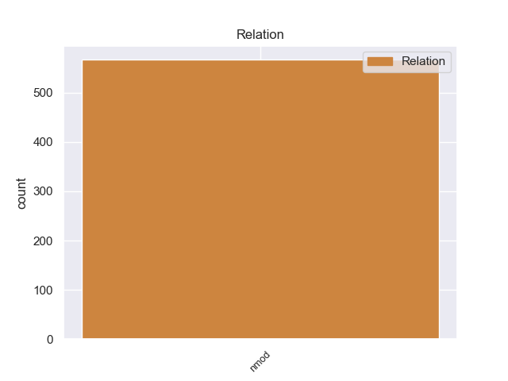
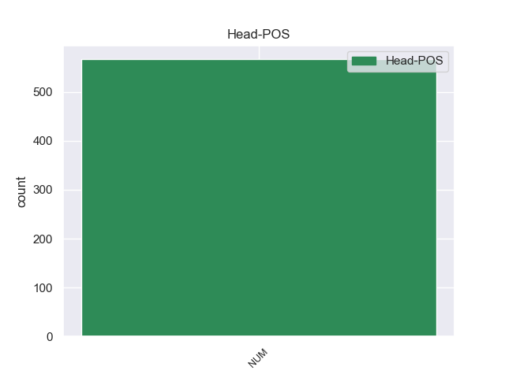
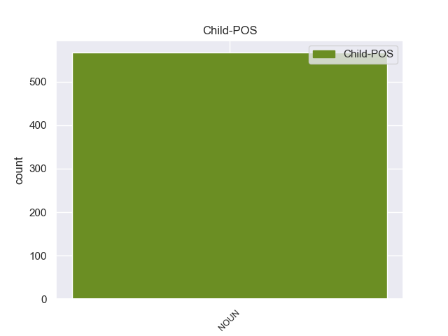

Distribution of features within this leaf



Agreement Rules sorted by frequency.
- When the dependent token is the nominal modifier(nmod) of the head token, and the head token is NUM
1 Дети _ _ _ _ 0 _ _ _
2 любят _ _ _ _ 0 _ _ _
3 играть _ _ _ _ 0 _ _ _
4 в _ _ _ _ 0 _ _ _
5 куплю _ _ _ _ 0 _ _ _
6 - _ _ _ _ 0 _ _ _
7 продажу _ _ _ _ 0 _ _ _
8 , _ _ _ _ 0 _ _ _
9 инстинкт _ _ _ _ 0 _ _ _
10 торговли _ _ _ _ 0 _ _ _
11 , _ _ _ _ 0 _ _ _
12 мены _ _ _ _ 0 _ _ _
13 , _ _ _ _ 0 _ _ _
14 наверное _ _ _ _ 0 _ _ _
15 , _ _ _ _ 0 _ _ _
16 один один NUM _ Case=Nom|Gender=Masc 0 _ _ _
17 из _ _ _ _ 0 _ _ _
18 древнейших _ _ _ _ 0 _ _ _
19 человеческих _ _ _ _ 0 _ _ _
20 инстинктов инстинкт NOUN _ Animacy=Inan|Case=Gen|Gender=Masc|Number=Plur 16 nmod 16:nmod SpaceAfter=No
21 . _ _ _ _ 0 _ _ _
Disagree Examples:
1 По _ _ _ _ 0 _ _ _
2 данным _ _ _ _ 0 _ _ _
3 правоохранительных _ _ _ _ 0 _ _ _
4 органов _ _ _ _ 0 _ _ _
5 , _ _ _ _ 0 _ _ _
6 сегодня _ _ _ _ 0 _ _ _
7 в _ _ _ _ 0 _ _ _
8 среднем _ _ _ _ 0 _ _ _
9 один один NUM _ Case=Nom|Gender=Masc 0 _ _ _
10 из _ _ _ _ 0 _ _ _
11 дюжины дюжина NOUN _ Animacy=Inan|Case=Gen|Gender=Fem|Number=Sing 9 nmod 9:nmod _
12 держателей _ _ _ _ 0 _ _ _
13 пластиковых _ _ _ _ 0 _ _ _
14 карт _ _ _ _ 0 _ _ _
15 , _ _ _ _ 0 _ _ _
16 увы _ _ _ _ 0 _ _ _
17 , _ _ _ _ 0 _ _ _
18 становится _ _ _ _ 0 _ _ _
19 жертвой _ _ _ _ 0 _ _ _
20 мошенников _ _ _ _ 0 _ _ _
21 . _ _ _ _ 0 _ _ _
1 В _ _ _ _ 0 _ _ _
2 любом _ _ _ _ 0 _ _ _
3 случае _ _ _ _ 0 _ _ _
4 , _ _ _ _ 0 _ _ _
5 горячих _ _ _ _ 0 _ _ _
6 блюд _ _ _ _ 0 _ _ _
7 только _ _ _ _ 0 _ _ _
8 два два NUM _ Case=Acc|Gender=Neut 0 _ _ _
9 в _ _ _ _ 0 _ _ _
10 день день NOUN _ Animacy=Inan|Case=Acc|Gender=Masc|Number=Sing 8 nmod 8:nmod SpaceAfter=No
11 , _ _ _ _ 0 _ _ _
12 на _ _ _ _ 0 _ _ _
13 завтрак _ _ _ _ 0 _ _ _
14 заключенные _ _ _ _ 0 _ _ _
15 получают _ _ _ _ 0 _ _ _
16 или _ _ _ _ 0 _ _ _
17 что-нибудь _ _ _ _ 0 _ _ _
18 вроде _ _ _ _ 0 _ _ _
19 хлопьев _ _ _ _ 0 _ _ _
20 , _ _ _ _ 0 _ _ _
21 или _ _ _ _ 0 _ _ _
22 немного _ _ _ _ 0 _ _ _
23 денег _ _ _ _ 0 _ _ _
24 , _ _ _ _ 0 _ _ _
25 чтобы _ _ _ _ 0 _ _ _
26 купить _ _ _ _ 0 _ _ _
27 себе _ _ _ _ 0 _ _ _
28 завтрак _ _ _ _ 0 _ _ _
29 по _ _ _ _ 0 _ _ _
30 вкусу _ _ _ _ 0 _ _ _
31 . _ _ _ _ 0 _ _ _
1 С _ _ _ _ 0 _ _ _
2 2001 _ _ _ _ 0 _ _ _
3 года _ _ _ _ 0 _ _ _
4 она _ _ _ _ 0 _ _ _
5 - _ _ _ _ 0 _ _ _
6 член _ _ _ _ 0 _ _ _
7 палаты _ _ _ _ 0 _ _ _
8 лордов _ _ _ _ 0 _ _ _
9 , _ _ _ _ 0 _ _ _
10 одна один NUM _ Case=Nom|Gender=Fem 0 _ _ _
11 из _ _ _ _ 0 _ _ _
12 " _ _ _ _ 0 _ _ _
13 народных _ _ _ _ 0 _ _ _
14 пэров пэр NOUN _ Animacy=Anim|Case=Gen|Gender=Masc|Number=Plur 10 nmod 10:nmod SpaceAfter=No
15 " _ _ _ _ 0 _ _ _
16 , _ _ _ _ 0 _ _ _
17 назначенных _ _ _ _ 0 _ _ _
18 премьер-министром _ _ _ _ 0 _ _ _
19 Тони _ _ _ _ 0 _ _ _
20 Блэром _ _ _ _ 0 _ _ _
21 , _ _ _ _ 0 _ _ _
22 по _ _ _ _ 0 _ _ _
23 его _ _ _ _ 0 _ _ _
24 собственному _ _ _ _ 0 _ _ _
25 выражению _ _ _ _ 0 _ _ _
26 , _ _ _ _ 0 _ _ _
27 для _ _ _ _ 0 _ _ _
28 того _ _ _ _ 0 _ _ _
29 , _ _ _ _ 0 _ _ _
30 " _ _ _ _ 0 _ _ _
31 чтобы _ _ _ _ 0 _ _ _
32 привнести _ _ _ _ 0 _ _ _
33 оживление _ _ _ _ 0 _ _ _
34 в _ _ _ _ 0 _ _ _
35 верхнюю _ _ _ _ 0 _ _ _
36 палату _ _ _ _ 0 _ _ _
37 " _ _ _ _ 0 _ _ _
38 . _ _ _ _ 0 _ _ _
1 После _ _ _ _ 0 _ _ _
2 того _ _ _ _ 0 _ _ _
3 , _ _ _ _ 0 _ _ _
4 как _ _ _ _ 0 _ _ _
5 мы _ _ _ _ 0 _ _ _
6 решили _ _ _ _ 0 _ _ _
7 провести _ _ _ _ 0 _ _ _
8 тест _ _ _ _ 0 _ _ _
9 пылесосов _ _ _ _ 0 _ _ _
10 для _ _ _ _ 0 _ _ _
11 сухой _ _ _ _ 0 _ _ _
12 очистки _ _ _ _ 0 _ _ _
13 , _ _ _ _ 0 _ _ _
14 в _ _ _ _ 0 _ _ _
15 нашу _ _ _ _ 0 _ _ _
16 редакцию _ _ _ _ 0 _ _ _
17 стали _ _ _ _ 0 _ _ _
18 подвозить _ _ _ _ 0 _ _ _
19 любопытные _ _ _ _ 0 _ _ _
20 модели _ _ _ _ 0 _ _ _
21 - _ _ _ _ 0 _ _ _
22 по _ _ _ _ 0 _ _ _
23 одной один NUM _ Case=Dat|Gender=Fem 0 _ _ _
24 - _ _ _ _ 0 _ _ _
25 две _ _ _ _ 0 _ _ _
26 каждый _ _ _ _ 0 _ _ _
27 день день NOUN _ Animacy=Inan|Case=Acc|Gender=Masc|Number=Sing 23 nmod 23:nmod SpaceAfter=No
28 . _ _ _ _ 0 _ _ _
1 Два два NUM _ Animacy=Inan|Case=Acc|Gender=Masc 0 _ _ _
2 с _ _ _ _ 0 _ _ _
3 половиной половина NOUN _ Animacy=Inan|Case=Ins|Gender=Fem|Number=Sing 1 nmod 1:nmod _
4 года _ _ _ _ 0 _ _ _
5 назад _ _ _ _ 0 _ _ _
6 бизнес _ _ _ _ 0 _ _ _
7 - _ _ _ _ 0 _ _ _
8 сообщество _ _ _ _ 0 _ _ _
9 приняло _ _ _ _ 0 _ _ _
10 решение _ _ _ _ 0 _ _ _
11 объединиться _ _ _ _ 0 _ _ _
12 в _ _ _ _ 0 _ _ _
13 вопросе _ _ _ _ 0 _ _ _
14 налогового _ _ _ _ 0 _ _ _
15 администрирования _ _ _ _ 0 _ _ _
16 . _ _ _ _ 0 _ _ _